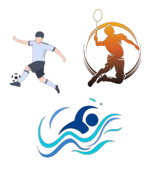

Le web est un vaste terrain de jeu où je peux exprimer ma créativité et constater l'impact de mon travail en temps réel. Lorsque je vois mes idées prendre vie sur un navigateur, cela me procure satisfaction et me motive à continuer à progresser.

J'ai pendant 7 ans pratiqué le football avec le club de l'USBJ, puis pendant 3 ans j'ai pratiqué la natation avec le CNF, et enfin pendant 7 ans j'ai pratiqué le badminton avec le club du BJB. Ces 3 sports furent chacun pratiqué à un niveau compétitif.
Le football est un sport qui me passionne. Fervent supporter du SRFC, je suis attentivement le championnat de Ligue 1. Mais je suis aussi de près les Championnats européens, ainsi que les compétitions européennes et internationales.
J'aime passer du temps à jouer aux jeux vidéo. Pour moi, ce sont des sources infinies de divertissement, qui permettent de passer de bons moments, seul ou bien avec ses amis.
J'apprécie regarder des films et séries, car ils offrent une variété de genres qui permettent d'explorer de nombreux univers. J'ai l'habitude de les regarder en anglais, car cela me permet d'améliorer mes compétences linguistiques, et cela accentue le jeu d'acteur.
Durant mon enfance, j'étais admiratif des films de super-héros. C'est grâce à cela que ma passion pour les Comics s'est développée, et plus particulièrement les Marvel. C'est toujours un agréable moment pour moi de découvrir de nouvelles histoires sur mes héros préférés.
Les mangas ont suscité mon intérêt dès le départ. Des histoires captivantes, et des coups de crayon distinctif, ont développé en moi une dépendance à ces bandes dessinées japonaises. Il y en a pour tous les goûts, et on ne s'ennuie jamais pendant leur lecture.